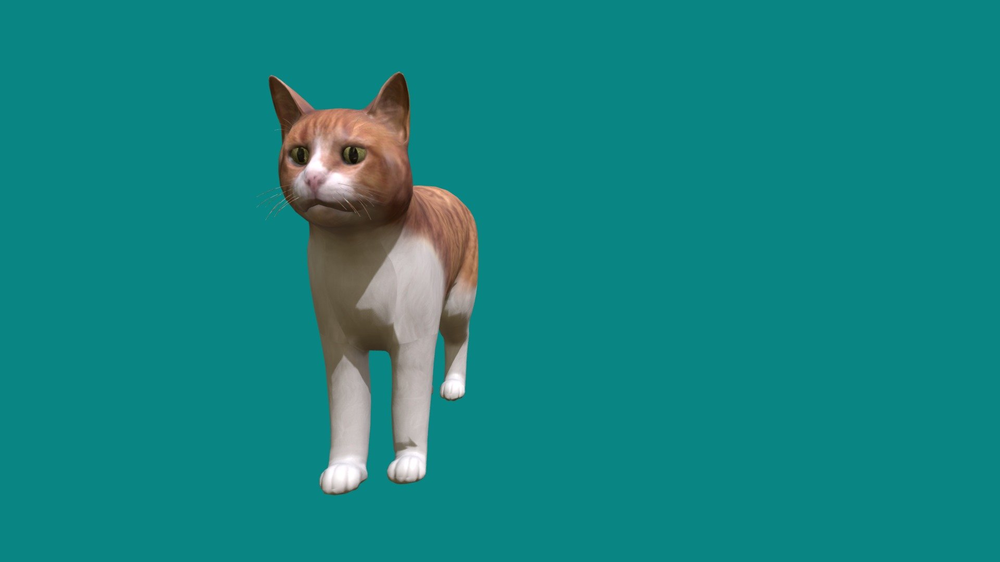

Chuẩn bị thẻ
Mở ảnh trên điện thoại để webcam quét, hoặc in nguyên thẻ.
MỘT TẤM THẺ. MỘT THẾ GIỚI NHỎ.
Gặp mèo, chó, voi, sư tử và hươu cao cổ qua camera. Xoay mô hình, nghe tiếng kêu và khám phá môi trường sống.
Webcam laptop: dùng localhost · iPhone: cần URL HTTPS

BỘ SƯU TẬP
Mở ảnh trên điện thoại để webcam quét, hoặc in nguyên thẻ.
Giữ trọn viền đen trong hình, đủ sáng và tránh phản chiếu.
Kéo ngang để xoay. Đọc thông tin và nghe tiếng kêu của từng con.